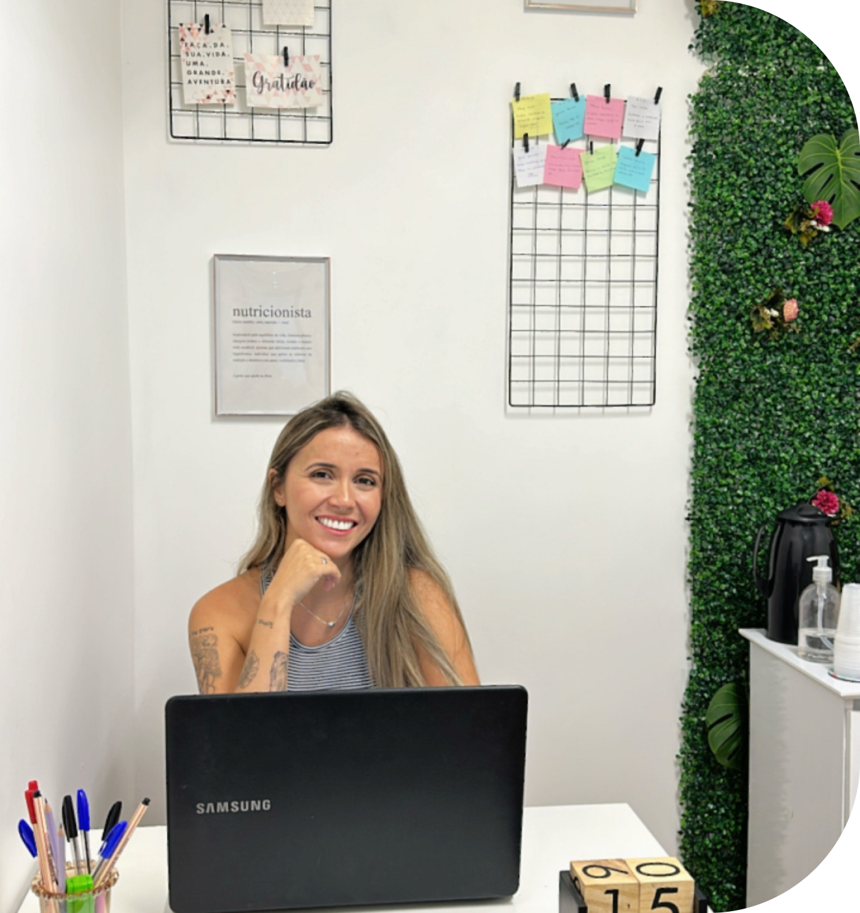

Prazer, Camila Lima,
sua última nutricionista!
Formada pela UNIRIO e apaixonada pela nutrição.
Meu objetivo é trazer ao paciente o maior conforto possível durante a reeducação alimentar.
Atualmente atendo os mais diversos casos, como:
-
Tratamentos
Diabetes, hipertensão, câncer, doenças cardiovasculares, dislipidemia e mais.
-
Atividades Físicas
Atletas e praticantes de atividades físicas, como musculação, CrossFit e corrida.
-
Reeducação
Abordagem comportamental que considera o indivíduo, não só o objetivo
-
A partir de 8 anos
Contemplando todas as faixas etárias, multiplicando hábitos saudáveis.